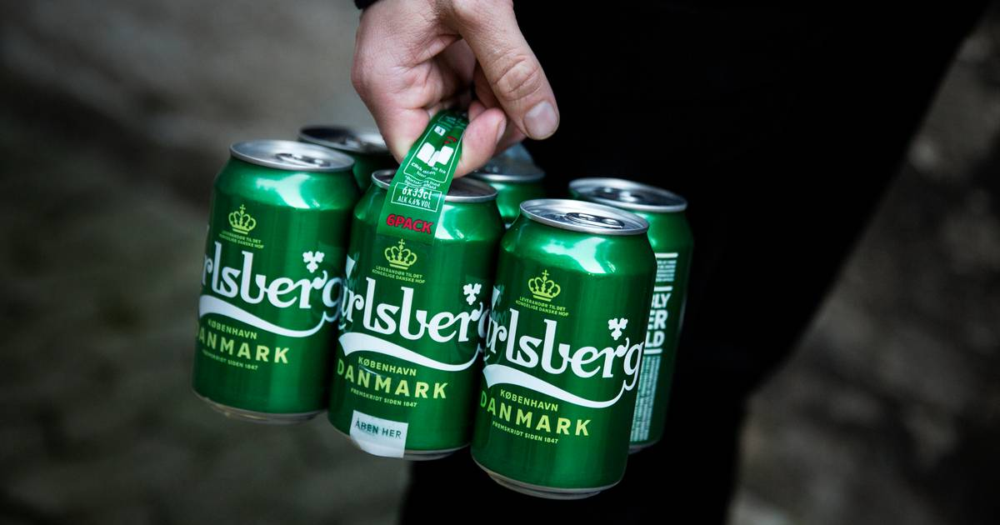
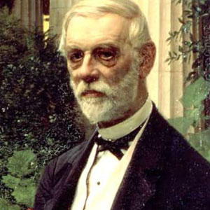

PROBABLY THE BEST BEER IN THE WORLD.
Carlsberg Pilsner er en velproportioneret, undergæret lager øl med duft af humle, malt og danske sommeræbler. Den har en god fyldig krop og en behagelig balance mellem det søde og det bitre i eftersmagen, der giver lyst til en tår mere. Aka: probably the best beer in the world.
Carlsberg har mere end 1500 medarbejdere læs mere om Carlsbergfondet
___________________
Brewing for a better today and tomorrow
Det hele startede 1847, hvor Carlsbergs grundlægger J.C. Jacobsens
passion for øl lagde grundstenen for det Carlsberg, vi kender i dag. I Carlsberg i Danmark arbejder i dag ca. 1.500 medarbejdere med at producere og levere Carlsberg, Tuborg og Coca-Cola-produkter. Vi har nogle af Danmarks største brands, og det er vi meget stolte over. Vi er en del af Carlsberg Group, som er verdens tredje største bryggeri-gruppe. Her på siden kan du læse om Carlsbergfondet og historien bag Carlsberg.
Læs mere om historien bag